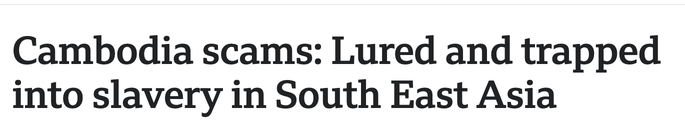
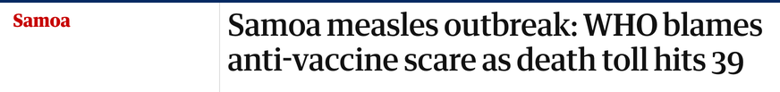
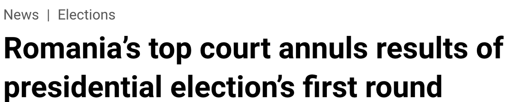
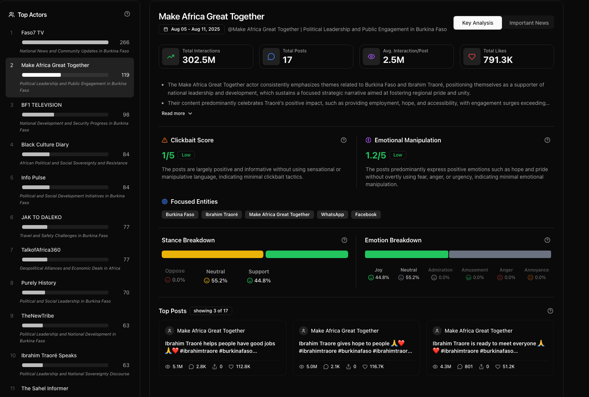
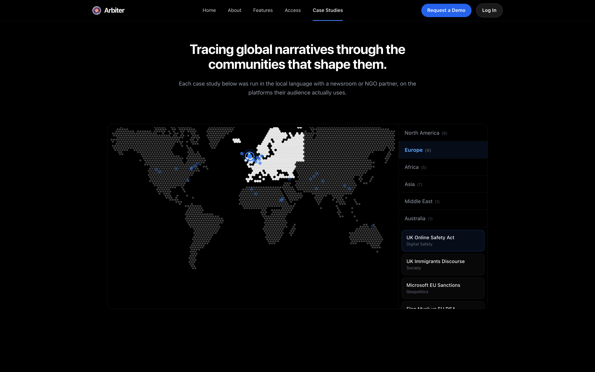

Commentary accounthandle withheld
Trump announces DOJ investigation into 500,000 *illegal* mail-in ballots sent out by the blue state of Maryland. Stop the fraud!
1,944,012 interactions across three posts
The average person spends about two hours and twenty minutes a day on social media (DataReportal, 2025).
Accounts that look independent repeat baseless claims about elections, health, and policy until people start to doubt the facts. Fooled repeatedly, people devalue every signal.
Sources: Hoes et al., Nature Human Behaviour 2024 · Gallup, Sept 2025.
What happens
events, claims, campaigns
Platforms & feeds
where people read it
Journalists & fact-checkers
the check on what's real
Communities decide
on unchecked feeds

Fake online job ads lure workers into forced-labour scam compounds.

Anti-vaccine fear cut Samoa's vaccination rate below 30%; dozens of children died.

A coordinated TikTok operation got the election annulled; the evidence vanished.
What happens
events, claims, campaigns
Platforms & feeds
public posts, through platform APIs
Journalists & fact-checkers
their view, restored through Arbiter
Communities decide
informed choices
Arbiter is a public-interest AI system: it maps the networks behind deception before it sways people's minds.
Interactions = views, comments, and likes on the posts we collect. Public case studies at arbiter.simppl.org/studies.
We asked Arbiter to map how Filipino workers get recruited abroad, and where the scams hide. Built with Migrasia, and since replicated for Indonesian workers.
1st Dynamic Personnel Resources Inc.
FacebookDEPLOYMENT UPDATE! Another milestone achieved!🥳 Congratulations to our newly deployed workers bound for Japan!🎉 …
Health Care Jobs · amplifier page
FacebookDEPLOYMENT UPDATE! Another milestone achieved!🥳 Congratulations to our newly deployed workers…
The Global Anti-Scam Alliance, 124 members across 90 countries, invited us to present the findings at its Bangkok summit. The report reached the Philippines Department of Migrant Workers.
Public reports: Philippines · Indonesia replication.
Maryland announces a printing vendor error: some voters were sent the wrong primary ballot.
The vendor cannot say who was affected, so replacements go to every mail-in voter, in envelopes marked “REPLACEMENT BALLOT INSIDE”. One ballot counts per voter.
Those mailings are recast online as “500,000 illegal mail-in ballots”: the same templated line from 50+ accounts across platforms.
Trump announces DOJ investigation into 500,000 *illegal* mail-in ballots sent out by the blue state of Maryland. Stop the fraud!
1,944,012 interactions across three posts
It bears repeating that no fake OR illegal mail-in ballots were distributed. Mail-in voting is not a fraud.
16,277 interactions across two posts
1,944,012 the loudest account pushing it
16,277 the state's chief election official
Sources: FactCheck.org, May 2026 · Maryland State Board of Elections. Interactions per account, 1–19 May; the study cites 469 news documents. Live study.
The same distrust of mail voting is the argument behind the SAVE Act, inside the same window.
TRUMP: PASS THE SAVE AMERICA ACT NOW, citing concerns over mail-in voting
111,142 interactions
Democracy International: 100+ projects worldwide, a USAID partner since 2003.
Sources: H.R. 8281 · H.R. 22 · Brennan Center · Democracy International.
Arbiter cuts the time an investigation takes, and makes it reproducible.
manual cross-platform triage of scam-recruitment ads, one platform and one post at a time
Arbiter collects hundreds of suspect ads, maps the coordinated networks, and drafts the investigation; the analyst verifies and publishes
And it replicates. The pipeline we built for the Filipino investigation re-ran for Indonesia: new country, new language, same afternoon. Every partner we onboard makes the next one faster.
Time figures from our Migrasia engagement. Public reports: Philippines · Indonesia replication.
Manosphere narratives: 3,361 posts, 127M interactions on X in two months. Child-safety early warning with Odisha state officials.
Election monitoring with Maryland’s election consultants. We traced one false ballot claim across 50+ coordinated accounts.
Full case earlier in this deck · Democracy International
Fake overseas job ads that end in trafficking. With Migrasia we mapped 14 coordination networks across 383 accounts, twice.
Evidence for advocacy groups facing organized denial. Across 645 posts, one narrative took 45% of all interactions.
Full case in the appendix · DeSmog signed up
Antenatal and menstrual-health literacy over WhatsApp, in trials in Maharashtra and Bangladesh. We benchmark LLMs in Hindi and Marathi.
We train newsroom staff with DW Akademie and JournalismAI, undergraduates through NextGenAI, and health workers. 2,200+ trained.
All six on one page: simppl.org/simppl-brochure.pdf
100+ organizations across 21 countries signed up on their own; we are working with a growing subset as resources allow. The IFCN wants Arbiter in the hands of its whole verified network of ~142 fact-checkers worldwide.
NEST caught the coordinated push behind a secret defamation bill before it surfaced publicly, reading the signal from fewer than 60 accounts.
Mongolia's only internationally accredited fact-checkers · case report
acted on evidence our partners published: Meta's Q1 2024 Bangladesh takedown, and YouTube terminating flagged channels.
Meta Adversarial Threat Report Q1 2024 · Burkina Faso case (appendix)
opened conversations with us about running this work in their jurisdiction: Maryland, California, New York; Odisha in India; and the Philippines' Department of Migrant Workers.
Maryland has committed to a statewide rollout; the rest are proposals and scoping conversations, July 2026
Raised-with-collaborators total per the SimPPL Annual Report 2025; direct-receipt split confirmed by the team, July 2026.
$120K counts earned revenue this year; multi-year contract values run higher. INSEAD and Columbia are grants, listed separately.
Journalism
Civil society
Commercial · agencies
Grants fund journalist access; contracts pay for programs and measurement.
Free seats. They run the investigations and publish what we find, in their own language and their own byline.
About $2,500 to $4,000 a month, signed by a director. We are in conversation with M+C Saatchi, ISD, George Washington University, Maryland, and the New York Attorney General.
Those five are prospects. Conversations are ongoing and subject to change. Our signed contracts this year are on the revenue slide.
Networks distribute us: the IFCN’s fact-checkers, and Indicator.media’s 14,000 readers.
We measure a newsroom’s own mentions, so audience teams renew annually.
Extremism researchers already license data. We sell the analytics layer on top.
The setup we build for one agency becomes the next agency’s starting point.
A consumer brand, and where we learned audience analytics.
A prediction market. It prices public response into its odds.
A global agency, and a channel into every brand it serves.
The two sides run on one platform. The public-interest side finds the problems and wins the grants; the commercial side pays for the free seats underneath it.
Ychance is signed. ISD, George Washington University, Maryland, the New York Attorney General, M+C Saatchi, and Pass the Salt are prospects, with conversations ongoing and subject to change.
Founded out of NYC Media Lab; bootstrapped nonprofit
First in India to win responsible AI education awards from both Google and Mozilla, then Wikimedia; 5 peer-reviewed papers published
CrowdTangle shuts down; members of its own team now help us, an early vote of confidence. Meta's Q1 Bangladesh takedown follows our partners' reporting; we join the MIT venture accelerator
Arbiter ships: UNDP AI cohort; first recurring revenue, $15K a quarter. Nobel Laureate Maria Ressa's team onboards
Scale: Fast Forward accelerator; 100+ orgs, 21 countries, 318 case studies created; earned revenue reaches $120K. Stanford picks Arbiter for its platform workshop, a slot Meta, TikTok, and YouTube held in past years. 4 state governments reach out to partner
Funded by Google, Mozilla, Ford, Omidyar, Wikimedia, and the Brown Institute at Columbia. Sources in the appendix.

Swapneel Mehta · Founder & Executive Director
Former postdoc at MIT and BU in AI safety. Integrity Institute Board Member, advising EU, UK, and LatAm policymakers on online safety.

Dhara Mungra · Co-Founder, leads engineering
NYU MS; former Data Scientist III at Bombora; CAIDP & U. Mannheim fellow; black belt and marathoner


Six full-time engineers build and run the platform: retrieval, agents, evaluation, infrastructure
Mukund Sudarshan · Anthropic
Christian Schroeder de Witt · University of Oxford
Chirag Raman · TU Delft
Sandra Khalil · All Tech Is Human
Rebecca Harvey · UK FCDO
Karan Dhabalia · entrepreneur (exited to Stripe)
Mansi Panchamia · World Bank
Stacey Peters · ex-VTDigger
Full board and team: simppl.org/team
For four to eight years we have trained journalists, students, and researchers to use these methods and tools. The programs build the audience and the credibility the product stands on.
NextGenAI. A year-long capstone fellowship where undergraduate teams build and ship AI responsibly. Sakhi, our health assistant, spun out of it.
AI for Journalism. Capacity-building for newsroom leaders and reporters, run with DW Akademie and JournalismAI.
AI for Healthcare. Training frontline health workers to run Sakhi, our WhatsApp health assistant, in local languages.
2,200+ trained across these programs. Alumni have gone on to Ivy League PhD programs, the Microsoft Research Fellowship, FAANG companies, and prominent startups.
Awards from Google and Mozilla. Programs backed by Genentech, DeepMind (via the NYU AI School), the University of Mannheim, DW Akademie, JournalismAI, and MIT. simppl.org/programs · simppl.org/testimonials
Annual support, at whichever level fits your program.
Pilot grants from $25K to $250K fund one specific program. Tell us which space matters most to you and we will cost it together.
Budgets and milestones are ready for whichever scope you want to discuss. team@simppl.org
The journalists and fact-checkers communities trust lost their view of the feeds; Arbiter restores it, with every claim cited.
It already works at scale: 100+ organizations in 21 countries, and platforms and officials act on what they publish.
Support runs from a $25K pilot to $1M a year of general operating support across all six areas.
team@simppl.org simppl.org · arbiter.simppl.org · a U.S. 501(c)(3) nonprofit
Appendix
The way fact-checking funders expect: who we equip, what they publish, who acts on it.
| What we count | How | Status |
|---|---|---|
| Investigations published by partners | 31 public case studies, each linked | Measured today |
| Detection lead time | Days from partner finding to public confirmation: 19 in Mongolia | Measured today |
| Platform enforcement on flagged content | Actions on the public record: Meta takedown, YouTube terminations | Measured today |
| Health literacy | Pre/post surveys, 350+ families | Measured today |
| Journalists trained, active at 6 months | Per-cohort follow-up, starting with Kenya | Planned |
| Audience reached via partner publications | Partner analytics: dpa, Rappler, Jagran | Planned, in the 24-month plan |
Appendix · pull up if asked
A manufactured pan-African praise campaign around Ibrahim Traoré, and the takedowns that followed.

Live product: our Top Actors panel; one account drew 302.5M interactions across 17 posts in a 100%-positive campaign.
Burkina Faso / Traoré case study; platform actions on the public record.
Appendix · pull up if asked
In our Bloomberg study, we uncovered sleeper-cell accounts promoting Russian disinformation.
Tali
YouTube · EnglishP.17 — Former CIA Glenn Corn: The Truth About Russian Disinformation | ALLATRA TV #allatra #ukraine
Vitalina Sumy
YouTube · Russian / UkrainianЧ.7 — Колишній співробітник ЦРУ Гленн Корн: Правда про російську дезінформацію | АЛЛАТРА ТБ Львів #аллатра #україна
Created nearly five years apart (Feb 2020, Dec 2024), yet promoting the same ~460-video catalogue in two languages, posing as independent voices.
Case study · Arbiter for a partner
A creative agency runs online reproductive-health campaigns. Arbiter maps the conversation so they can target the work and measure its effect.
posts collected, 92 analysed (YouTube + X, June 2026)
interactions on the "parental-health media" theme
A baseline map; the partner uses it to target campaigns and measure their effect over successive windows. Live study on arbiter.simppl.org.
Case study · Climate
Our "Narratives regarding Climate change" study: 645 posts across X and YouTube, scored account by account.
of all interactions repeat one narrative: "climate change is a hoax, clean energy is a scam."
on both clickbait and emotional manipulation for the loudest account, an anonymous conspiracy page.
DeSmog signed up on its own; the Disinfo Institute asked us to trace the ads behind climate-hoax campaigns.
Panels captured July 2026. Scores are five-point scales, high means heavier manipulation; reach is follower count.
Appendix
Benchmarks & methods, in depth → mehtaver.se/slides/arbiter.html
Appendix
| Claim | Value | Source |
|---|---|---|
| Posts collected | 3.7M+ | arbiter.simppl.org counters; team, July 2026 (refresh before presenting) |
| Interactions tracked | ~20B a month; 248B cumulative on monitored accounts | team, July 2026; metric is interactions (views, comments, likes), not people |
| Organizations / countries / users | 100+ (production shows ~160+ deduped; we cite the conservative floor) / 21 / 261 users | production analytics 2026-07-02 (self-reported affiliations); 21 countries per team; 100+ per user ruling 2026-07-13 |
| Case studies | 318 on-platform; 31 public; map NA 9 · EU 8 · Asia 7 · Africa 5 · ME 1 · AU 1 | production analytics 2026-07-02; arbiter.simppl.org/studies |
| Signup name wall | as shown | production analytics 2026-07-02, self-reported organization field, curated for recognizability |
| IFCN network / verified signatories | 170+ organizations / ~142 verified; distribution interest per team | poynter.org/ifcn; github.com/IFCN/verified-signatories; team, July 2026 |
| X API pricing | free tier ended; enterprise from ~$42K/month | X enterprise API public pricing, cited in our 2026 Mozilla proposal |
Appendix
| Claim | Value | Source |
|---|---|---|
| Telegram investigation | ~4,500 pro-Russian channels mapped | mehtaver.se research figure; presented at Stanford Trust & Safety Research Conference |
| Mongolia early warning | 19 days; direction read from <60 accounts while redraft was secret | NEST case study; SimPPL funder brochure |
| Migrasia investigation | 16 impersonated manufacturers; 1,025 ads triaged; 575 screened in two days | Migrasia case study; SimPPL funder brochure |
| Traoré actor panel | 302.5M interactions across 17 posts | on-screenshot, Burkina Faso investigation |
| Gambling investigations (flow + answer panel) | 6,345 posts; MetaWin 23.5M; 72 themes; 964 users; 333/397 documents | arbiter.simppl.org/studies; two investigations + agent-answer screenshot |
| "Days of analysis into minutes" | measured effort reduction | measured with Migrasia and NEST (partner engagements, 2026) |
Appendix
| Claim | Value | Source |
|---|---|---|
| Meta Q1 2024 Bangladesh takedown | followed partner reporting | Meta Adversarial Threat Report Q1 2024 (public); SimPPL Annual Report 2025 |
| YouTube channel terminations | channels partners flagged, later independently terminated | Burkina Faso / Traoré case study; SimPPL Annual Report 2025 |
| Board of directors | 8 members, as listed on the team slide | simppl.org/team (confirmed by team, July 2026) |
| Timeline milestones | 2021 NYC Media Lab; 2023 Mozilla/NSF; 2024 CrowdTangle shut; 2025 UNDP + revenue; 2026 Fast Forward | SimPPL Annual Report 2025; Schmidt concept note v6 |
| Earned revenue | $15K/quarter reached 2025; $60K/$120K/$300K annual (reached/planned/target) | Annual Report 2025; 24-month proposal budget |
| Raised since 2021 | ~$450K to SimPPL from jointly-raised grants | SimPPL Annual Report 2025 |
| Kenya training cohort | 10 journalists, Africa Uncensored, DW Akademie | SimPPL Annual Report 2025 |
| Sakhi families reached | 350+ (100 study Maharashtra + 250 Bangladesh) | SimPPL Annual Report 2025 |
| Peer-reviewed papers | 14 | simppl.org/research |
| CrowdTangle shutdown | Meta closed it in August 2024 | Meta announcement, on the public record |
| Odisha seed funding | German foundation grant, infrastructure + early work | grant agreement (in data room) |
| YouTube API access | 1.2M calls/day granted | YouTube Data API grant letter (in data room) |
Appendix
organizations signed up
countries

Public case studies with newsroom and NGO partners, each in the local language: arbiter.simppl.org/studies.
Appendix
| Country | Partner | Work |
|---|---|---|
| Mongolia | NEST Center for Journalism | Legislative early warning, fact-checking |
| Philippines | Migrasia · Rappler | Recruitment-ad screening |
| Indonesia | Migrasia (based in Hong Kong) | Scam-recruitment investigations |
| Kenya | DW Akademie · Africa Uncensored + 10 journalists | Influence-operation training and investigations |
| Germany | dpa · DW Akademie | National press agency partnership |
| India | Jagran New Media · Odisha state partnership | Fact-checking, child-safety early warning |
| Bangladesh | Spreeha Foundation · policy think tank | Health program, threat reporting |
| United States | Gothamist/NYPR · Factchequeado | Local newsroom investigations, Spanish-language fact-checking |
Verified against arbiter.simppl.org and the SimPPL Annual Report 2025. Country count updated to 21 per the team (2026-07-12); simppl.org/about counted 8 at the last crawl, Hong Kong among them.